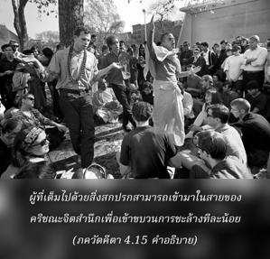

ดวงวิญญาณผู้หลุดพ้นทั้งหลายในอดีตกาลปฏิบัติด้วยความเข้าใจในธรรมชาติทิพย์ของข้า ดังนั้นเธอควรปฏิบัติหน้าที่ของเธอ โดยการเจริญตามรอยพระบาทพวกท่าน

มีมนุษย์อยู่สองประเภท บางคนเต็มไปด้วยมลพิษทางวัตถุปกคลุมอยู่ในหัวใจ และบางคนมีเสรีทางวัตถุ กฺฤษฺณจิตสำนึกจะมีคุณประโยชน์เท่ากันต่อบุคคลทั้งสองประเภทนี้ ผู้ที่เต็มไปด้วยสิ่งสกปรกสามารถเข้ามาในสายของกฺฤษฺณจิตสำนึกเพื่อเข้าขบวนการชะล้างทีละน้อย โดยการปฏิบัติตามหลักธรรมแห่งการอุทิศตนเสียสละรับใช้ ผู้ที่มีความสะอาดจากมลทินต่างๆแล้วอาจปฏิบัติอย่างต่อเนื่องเช่นเดียวกันในกฺฤษฺณจิตสำนึก เพื่อผู้อื่นอาจปฏิบัติกิจกรรมตามเป็นตัวอย่างและได้รับประโยชน์ คนโง่หรือนวกะในกฺฤษฺณจิตสำนึกชอบเกษียณตัวเองจากกิจกรรมต่างๆโดยยังไม่มีความรู้ในกฺฤษฺณจิตสำนึก อรฺชุน ทรงปรารถนาที่จะเกษียณจากกิจกรรมในสมรภูมิแต่องค์ภควานฺทรงไม่อนุมัติ เราควรรู้ว่าควรจะปฏิบัติตนอย่างไร สำหรับการเกษียณจากกิจกรรมในกฺฤษฺณจิตสำนึก และไปนั่งอยู่ห่างๆแสดงท่าว่าตนเองมีกฺฤษฺณจิตสำนึกเช่นนี้ไม่สำคัญเท่ากับการปฏิบัติจริงในสนามกิจกรรมเพื่อองค์กฺฤษฺณ ณ ที่นี้ อรฺชุน ทรงได้รับการแนะนำให้ปฏิบัติตนในกฺฤษฺณจิตสำนึกตามรอยพระบาทสาวกขององค์กฺฤษฺณในอดีต เช่น สุริยเทพ องค์ วิวสฺวานฺ ดังที่ได้กล่าวมาแล้วว่าองค์ภควานฺทรงทราบกิจกรรมทั้งหลายในอดีตของพระองค์ รวมทั้งบุคคลต่างๆผู้ปฏิบัติกฺฤษฺณจิตสำนึกในอดีต ดังนั้นพระองค์ทรงแนะนำการปฏิบัติของสุริยเทพผู้ทรงเรียนศิลปะนี้จากพระองค์เมื่อหลายล้านปีก่อน นักศึกษาเช่นนี้ขององค์กฺฤษฺณได้ถูกกล่าวไว้ ณ ที่นี้ว่าทรงเป็นผู้หลุดพ้น และปฏิบัติตนตามหน้าที่ที่องค์กฺฤษฺณทรงกำหนดให้